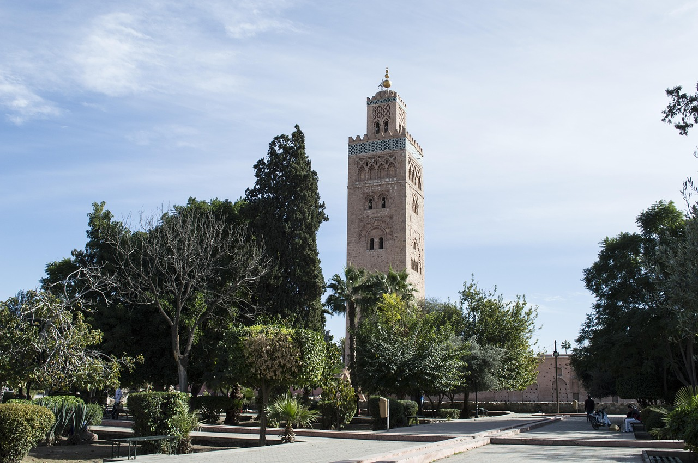
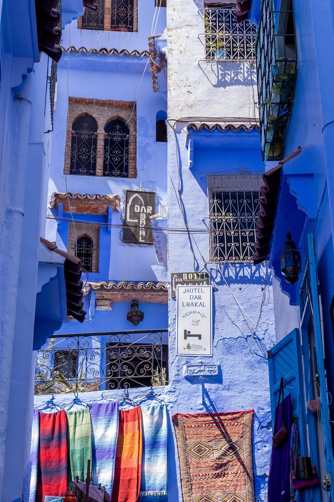
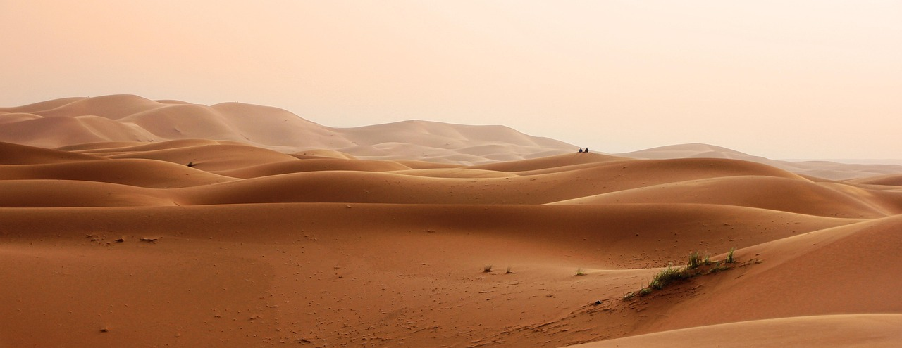

CITY & MEDINA
Marrakech
Courtyard calm, garden afternoons and a medina that rewards curiosity. Give yourself time to explore without a checklist.
Plan Marrakech01 / DISCOVER MOROCCO
Follow the scent of cedar through a medina. Take the road toward the sea. Find the Morocco that speaks to you.
Find your starting point
CHOOSE YOUR CHANGE OF SCENERY
These are destination guides,
not bookable offers.

CITY & MEDINA
Courtyard calm, garden afternoons and a medina that rewards curiosity. Give yourself time to explore without a checklist.
Plan MarrakechMOUNTAIN DAYS
Blue-painted lanes and mountain air. Leave room for a quiet walk, a long lunch, and the pleasure of taking your time.
Plan Chefchaouen
ATLANTIC RHYTHMS
Harbor walks, a salt-air breeze and a medina beside the ocean. Bring a layer for the wind and a little space in your plans.
Plan Essaouira
DESERT HORIZONS
A journey toward open skies and dunes. Allow generous travel time and confirm transfers and weather with your host.
Plan MerzougaLIVING HERITAGE
Come for the medina and stay curious about its history. A guided introduction can help you appreciate more than the surface.
Plan FesROOM TO UNWIND
Build a coastal break around beach days and a comfortable base. Look for the space and facilities your group actually needs.
Plan AgadirA PLACE TO START
Begin with a city stay or collect a car for the next chapter. Check pickup details before making plans around your arrival.
Plan CasablancaTry another name or explore all seven destinations.